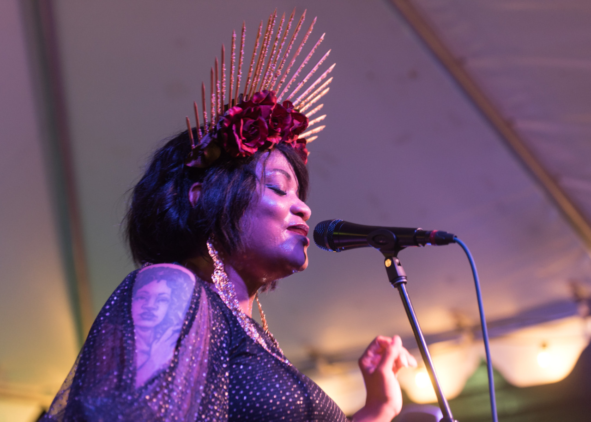

TT & MM 8/20/18
Multi-platinum selling artists Wiz Khalifa and Rae Sremmurd (Slim Jxmmi and Swae Lee) announced their co-headlining Dazed & Blazed Summer 2018 Amphitheater Tour, produced by Live Nation. The two rap and hip hop superstars will be joined by Lil Skies and O.T. Genasis as support on various dates of the outing. Fans can expect a night of high energy performances with both artists being known for their incredible live shows, filled with all of their hits and crowd favorites. Wiz Khalifa continues to be a staple in rap and popular music with his combination of mellow and party music, including “Young, Wild & Free,” “Black and Yellow,” “See You Again,” and many more. Rae Sremmurd equally bring the heat to the stage with their range of chart-topping hits and collaborations including “No Type,” “Black Beatles,” “Powerglide,” “Guatemala,” “Brxnks Truck,” and the list continues. The tour will be a can’t miss event bringing together two influential and culture shaping artists, who continue to march to the beat of their own drums, for one epic co-headlining night. Link to tickets below.
Buy Tickets HereLook, we’re offering you an opportunity to start your weekend early AND help the Austin community.
Thursday. Emily Wolfe SAFE benefit at Stubb’s indoor. Wolfe took most of 2017 off to strategize and write new music for her debut full-length due out later this year, but she whet our appetites for more new tunes with last year’s single “Holy Roller,” a hard-driving blues rocker propelled by muscular guitar. This show is a benefit for the SAFE Alliance, a local nonprofit that serves survivors of sexual assault and exploitation, child abuse and domestic violence. One hundred percent of ticket sales go to SAFE. $20. 7:45 p.m. doors. 801 Red River St. stubbsaustin.com — D.S.S.

Thursday: Rock ‘n’ Restock at the Belmont. Austin’s queen of soul, Tameca Jones, puts on a spectacular show that’s worth the ticket price, but this benefit event for Capital Area Food Bank and the music patronage organization Black Fret also promises a special “super top secret headliner.” Opening the show is local band Shy Beast and DJ Mixer Rogers. $25. 6:30 p.m. doors. 301 W. Sixth St. belmontaustin.com — D.S.S.
The years since the release of Singles have been transformative for Future Islands, catapulting the Baltimore-based band from cult favorites to synthpop icons. As addictive songs like breakout "Seasons (Waiting on You)" turned the world on to sublime pleasures a loyal fan base already knew, this hard-touring band plowed forward, playing their 1,000th show in July 2015 and celebrating their 10th anniversary in February 2016. Now Future Islands returns at the top of their game with new album The Far Field, delivering twelve chest pounding love songs and odes to the road as only they can. The Far Field refines and builds on the breakthroughs of Singles, bursting with undeniable hooks and disarmingly honest lyrics written by Samuel T. Herring (vocals, lyrics), William Cashion (bass, guitars), and Gerrit Welmers (keyboards, programming). The band began writing new material in January 2016 on the coast of North Carolina, and continued throughout the year in Baltimore before road-testing these songs with a series of secret shows under fake names. In November 2016, they settled in with Grammy Award-winning producer John Congleton at Los Angeles' legendary Sunset Sound, where everyone from The Beach Boys to Prince have laid down masterpieces.
Buy Tickets Here